Portraits
Des portraits personnels, professionnels ou éditoriaux, en studio et en extérieurs.
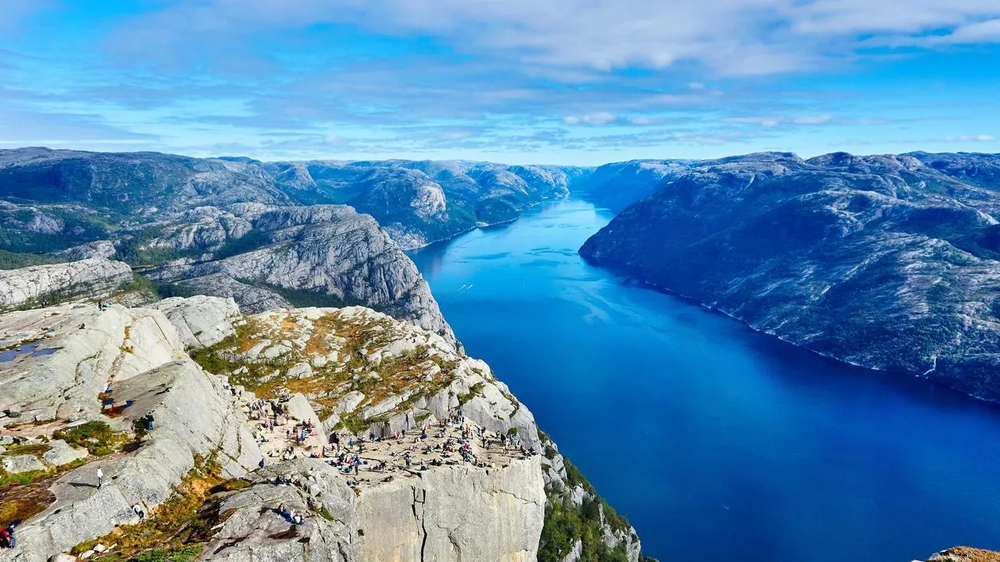
Photographe indépendant à Rennes
Portrait, reportage, mariage, architecture et paysages : découvrez un regard sensible sur les instants importants et les territoires qui nous entourent.
Découvrir les tirages Prendre contactPortfolio
Cette galerie est le fruit de plusieurs années de travail de notre équipe.
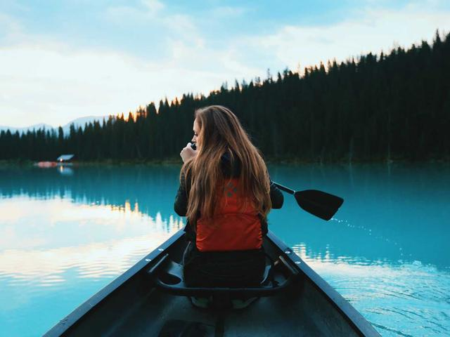
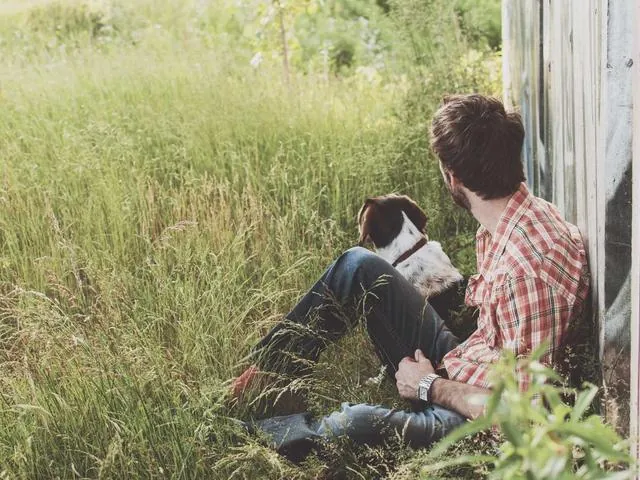
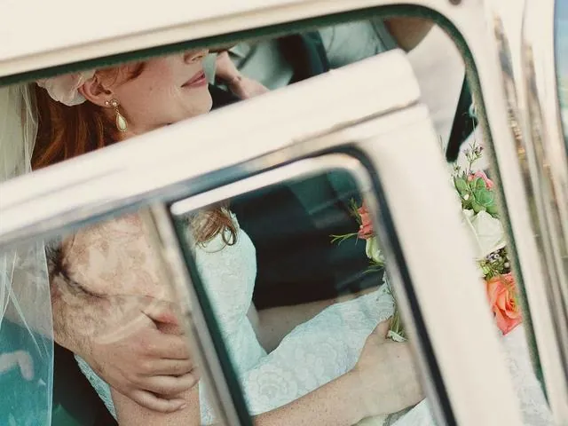
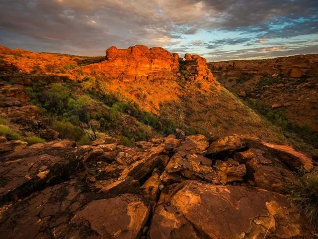
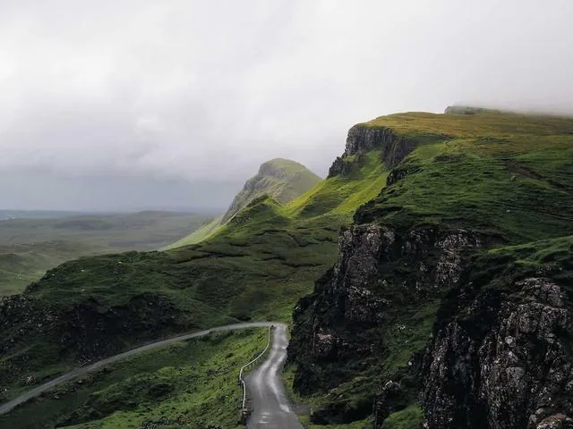
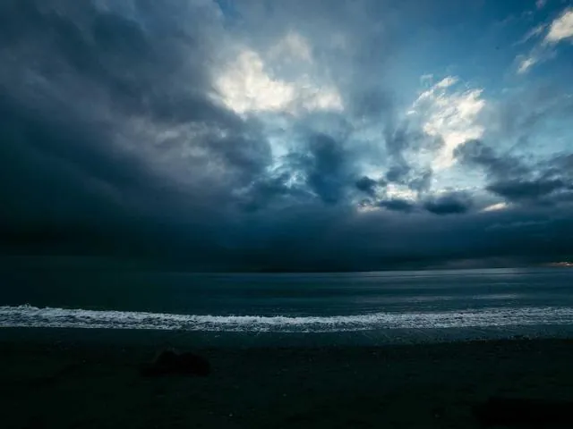
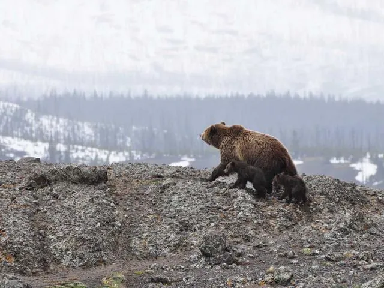
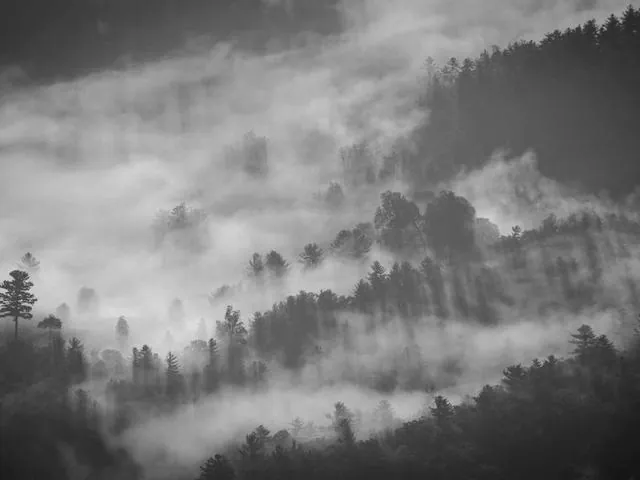
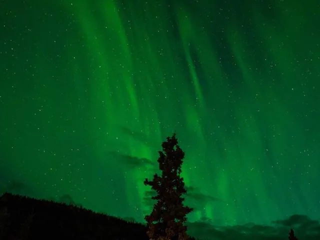
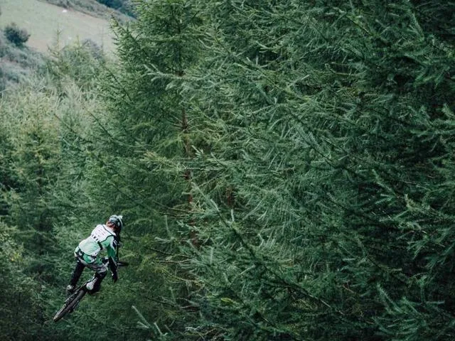
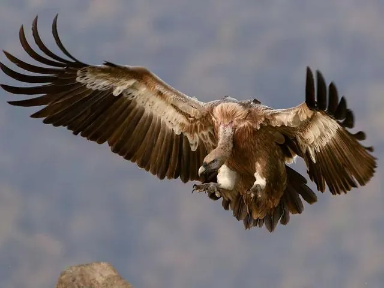
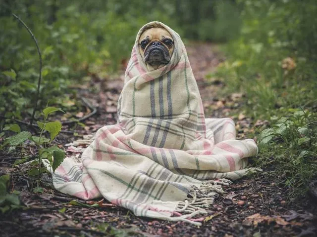
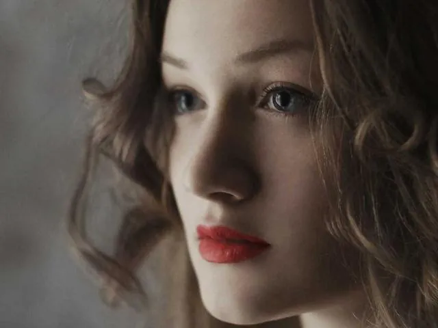
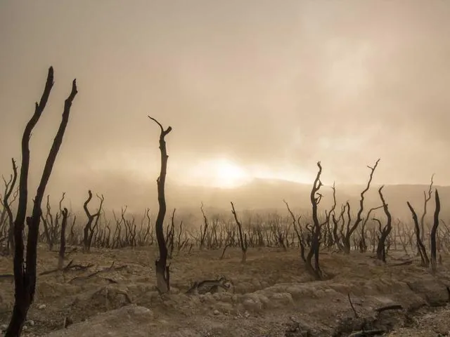
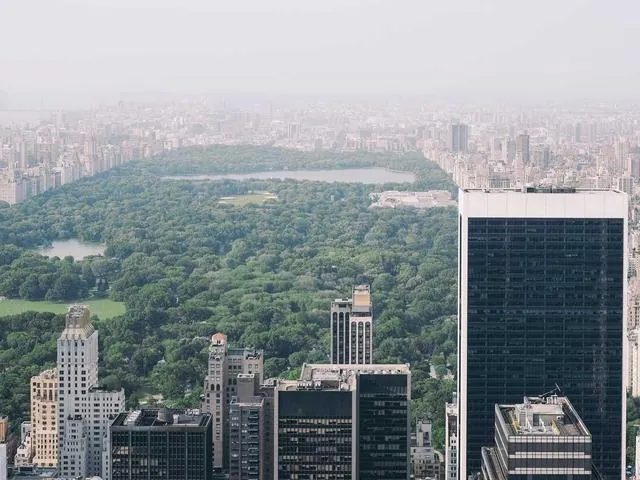
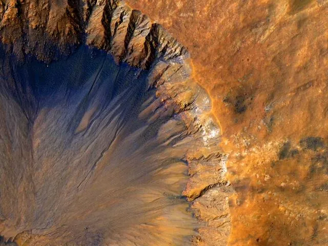
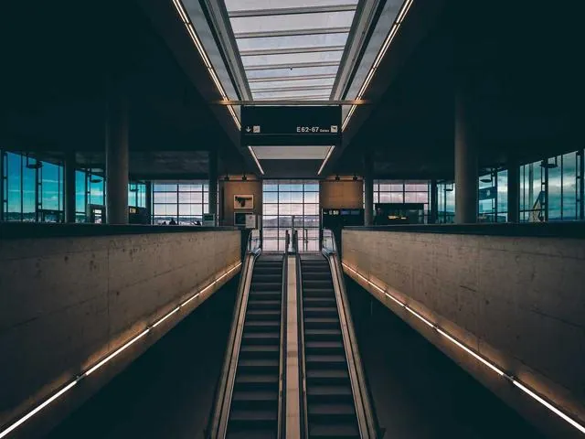
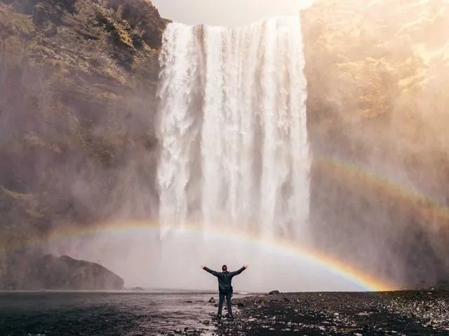
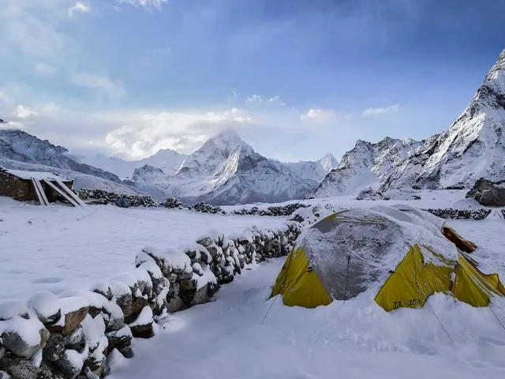
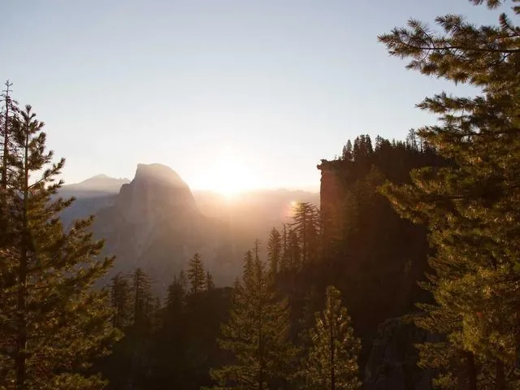
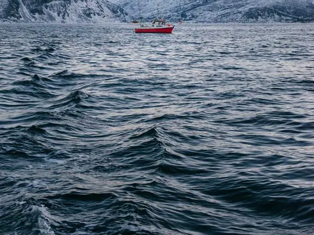
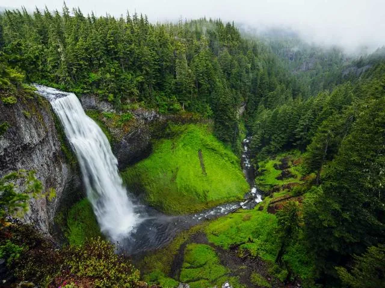

Prestations
Des portraits personnels, professionnels ou éditoriaux, en studio et en extérieurs.
Une présence discrète pour documenter les préparatifs, la cérémonie et la fête.
Des images pour valoriser les lieux, les matières, les usages et les projets urbains.
Des tirages d'art et reportages réalisés entre Bretagne, littoral et massifs français.
Journal
Ces contenus secondaires sont affichés et leurs images sont chargées dès l’arrivée sur la page.
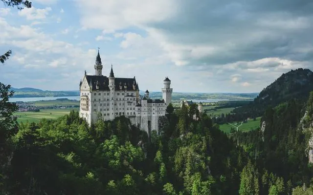
Retour en images sur une série de paysages réalisés au petit matin.
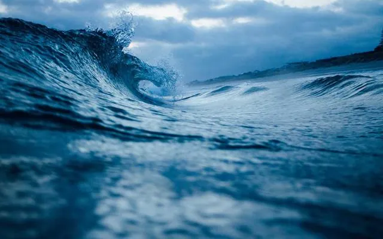
Lumière, météo, marées et repérages : les coulisses d’une commande.

Une série urbaine réalisée avant l’ouverture des commerces.
Témoignages
« Des images très justes, une présence rassurante et un résultat au-delà de nos attentes. »— Claire et Martin
« Le reportage architectural a apporté une nouvelle visibilité à notre projet de rénovation. »— Agence Kerne
« Chaque portrait raconte quelque chose sans jamais forcer la pose ou l’expression. »— Sophie L.
« Une grande disponibilité, y compris pendant les préparatifs et les imprévus du mariage. »— Léa et Thomas
« Les tirages reçus sont magnifiques et parfaitement emballés. »— Camille R.
« Un regard singulier sur la Bretagne et sur les lieux que nous pensions déjà connaître. »— Éditions Arvor
Questions fréquentes
Les séances comprennent les portraits, reportages professionnels, mariages, événements, photographies de produits, projets éditoriaux et commandes artistiques.
Les livraisons numériques et les tirages sont proposés selon la prestation retenue. Les fichiers sont conservés pendant une durée indicative de six mois.
Oui, des cartes cadeaux sont disponibles pour les portraits, séances en extérieur ou tirages d'art, avec une durée de validité de douze mois.
Oui, l'atelier intervient principalement en Bretagne mais les déplacements sont possibles dans toute la France selon la nature du projet.
Les formats, papiers et finitions sont décrits dans la boutique. Une demande de conseil peut être envoyée via le formulaire de contact.
Présentation
La vidéo YouTube est chargée uniquement après votre clic.